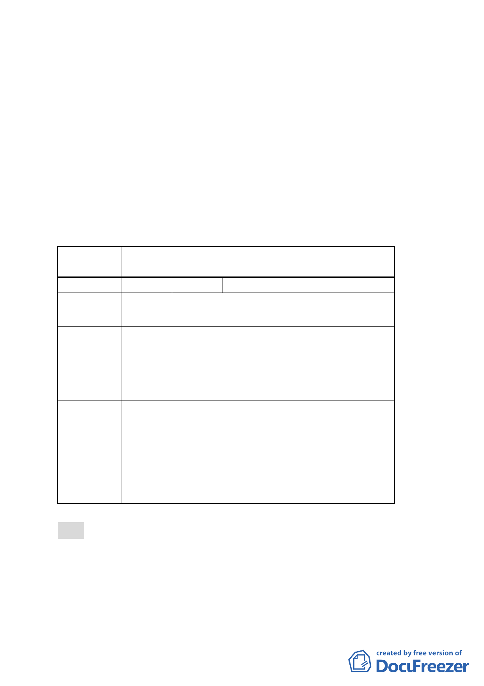

（五）修正後計畫書第 11 頁柒、都市設計準則，請比照已公告實
施之「2010 年臺北好好看」都市計畫變更案件，增列「建
築基地應依建築技術規則綠建築專章規定檢討」。
（六）修正後計畫書第 13 頁「拾、其他第三點、本計畫未規定事
項悉依相關法令及原計畫規定辦理」，請修正為「三、本
計畫未規定事項悉依相關法令及 92.1.7 修訂『臺北市基隆
河（中山橋至成美橋段）附近地區細部計畫暨配合修訂主
要計畫案內『基隆河（中山橋至成美橋）附近地區土地使
用分區與都市設計管制要點』』案規定辦理」。
二、公民或團體陳情意見審決如後附綜理表。
臺北市都市計畫委員會 公民或團體陳情意見綜理表
案 名 大彎北段「2010 年臺北好好看」細部計畫變更案
編號
陳情理由
建議辦法
委員會
決議
1 陳情人 陳議員玉梅
目前大彎北段商業區之建物使用現況，大多違規作為
住宅使用。
為避免都市計畫變更公告實施後，造成未來有更大量
之違規使用情事發生，故建議地上 1 至 3 層樓維持商
業使用，地上 4 層樓以上開放作為住宅使用，住宅使
用比例≦2/3 總容積，高度限制以不阻擋河岸景觀，及
免辦環境影響評估審查之 70 公尺為原則。
大彎北段地區係屬「2010 年臺北好好看」之科技產業
軸帶，基於其規劃理念係為提供產業進駐誘因、帶動
城市發展活力，故區內「2010 年臺北好好看」申請案
之「土地使用」部分，其因申請「2010 年臺北好好看」
所獲容積獎勵部分得比照商三所允許之使用項目，惟
不得作住宅之使用；至於其餘部分仍應依本區 92 年公
告實施之都市計畫規定辦理，不得作住宅之使用
肆、針對討論事項七、九、十四、十八、三十一、三十五、三十
七及四十等 8 案，涉及更新單元內同意人數僅 1 人之情形，
爾後送交本會審議案件須先辦理土地所有權人意見徵詢程
序，才得納入議程；至於徵詢所有權人程序，請市府更新處
於下次委員會議，提出報告。
- 50 -